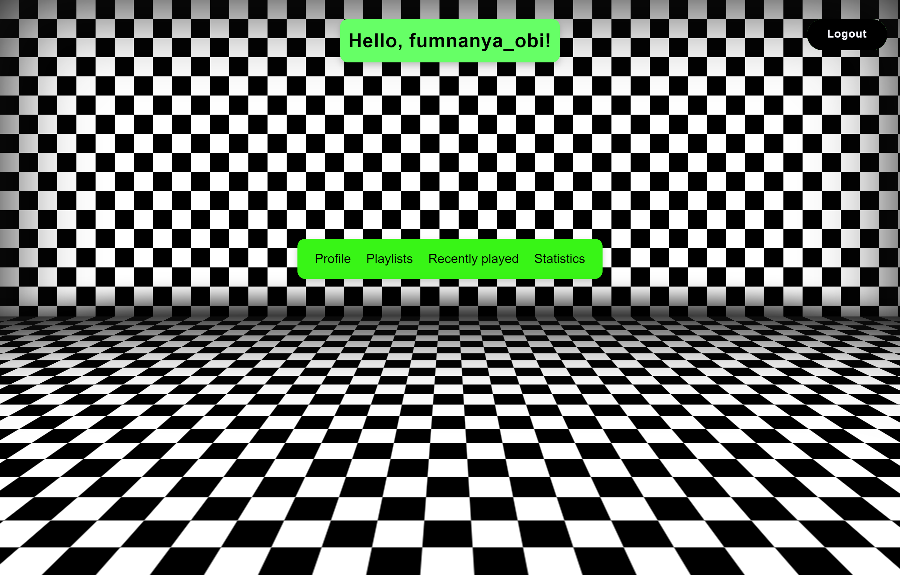

Spotify activity App
The spotify activity app is a Flask application designed to integrate with the Spotify API. It handles user authentication, allowing users to log in using their Spotify credentials to access personalized music statistics and playlists. This module demonstrates proficiency in OAuth 2.0 integration, secure handling of environment variables, and session management within a web application context.
App Link
The primary goal of this project is to analyze the user's listening patterns and create personalized playlists based on their listening activity. The project is still in the early stages of development and will be updated periodically as new features are added. Currently, the app is capable of fetching and displaying the user's recently played tracks.
Key Features:
Technologies Used :
Important information
The app is still in the development stage and will be updated periodically as new features are added.For further information, please refer to the project's README file on GitHub.